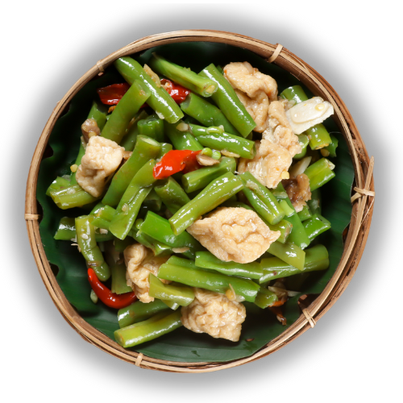

Beranda
Tentang Kami
Resep
Tips
Tumis Buncis

Bahan dan Alat:
150 gram buncis
1/4 papan tempe
3 siung bawang merah
2 siung bawang putih
3 buah cabai rawit
Garam secukupnya
Gula secukupnya
Penyedap secukupnya
Merica secukupnya
Kecap manis secukupnya
Minyak goreng secukupnya
Cara Membuat:
Potong menyerong buncis, lalu cuci bersih dengan air mengalir.
Potong dadu tempe.
Panaskan minyak, tumis bawang merah, bawang putih,dan cabai rawit hingga harum.
Masukkan buncis dan masak hingga setengah matang.
Masukkan tempe, aduk hingga merata.
Tambahkan garam, gula, penyedap, dan merica secukupnya. Aduk hingga bumbu meresap.
Tumis buncis siap disajikan.